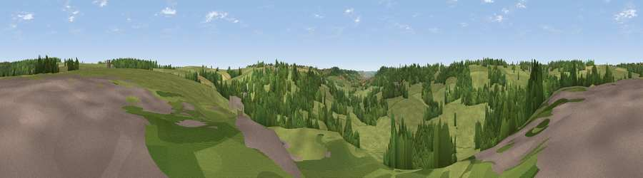

Viewpoint near Churchinford
#40394 in England · top 94% of its area beats it · near Churchinford · access?Where it is
The exact computed spot (ST 22525 11825). Click the marker for map links.
Public access: no public right of way or access land is recorded at this exact spot — it may be on private land. Computed from Natural England's CRoW access layer and OpenStreetMap rights of way — not the legal definitive map. Always verify locally.
The view, rendered

A 360° render of this exact spot computed from the terrain model, tree cover and land cover — summer colours, afternoon light, calibrated against photographs of famous viewpoints. Real trees, hedges and buildings will differ in detail.
The panorama
Grey silhouette: terrain skyline in each direction (720 bearings, Earth curvature and refraction included). Dashed green: skyline with trees (+15 m) and buildings (+8 m) as obstacles. Blue strip: how far the ground is visible on each bearing.
Where the view opens
Wedge length = distance to the farthest visible ground on that bearing (vegetation-aware). Rings at 10, 25 and 50 km.
What fills the view
71% grassland · 26% woodland · 2% cropland ·
Angular shares of the visible panorama (visual magnitude), not map area. Landscape diversity 0.31 (0–1 Shannon).
Key numbers
More beautiful places nearby
The staircase of upgrades: each row has a higher view potential than everything closer. Driving times are estimates from straight-line distance, calibrated against real road routing — check an actual route before setting out.
| Place | Direction | Drive | Score |
|---|---|---|---|
| Viewpoint near Yarcombe | ESE · 2 km | ~6 min | 49.1 |
| Viewpoint near Yarcombe | SSE · 3 km | ~8 min | 57.7 |
| Viewpoint near Yarcombe | S · 5 km | ~11 min | 63.3 |
| Viewpoint near Pitminster | NNW · 5 km | ~11 min | 73.1 |
| Viewpoint near Pitminster | NNW · 6 km | ~12 min | 74.2 |
| Viewpoint near Pitminster | NNW · 6 km | ~13 min | 77.3 |
| Viewpoint near Hewish | E · 18 km | ~31 min | 78.5 |
| Lambert's Castle Hill | SE · 19 km | ~33 min | 78.7 |
50.90068, -3.10311 · source: screening · position refined by local search. Computed location — check access rights before visiting.